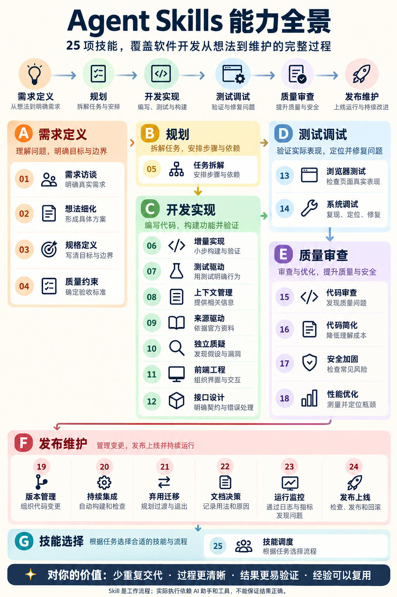
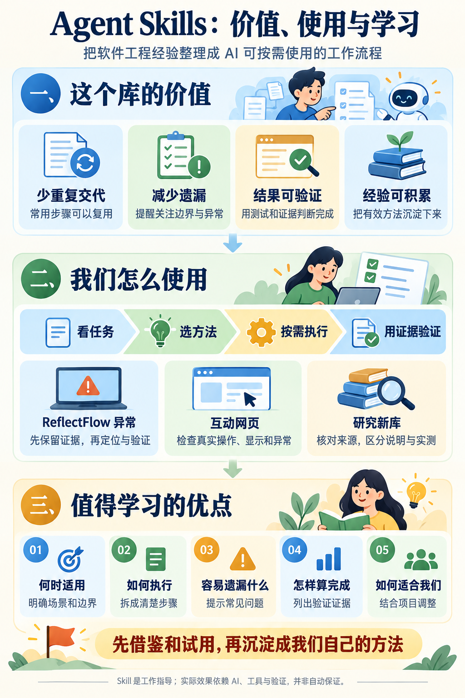

所有技能均有详细说明
依据固定版本，梳理用途、输入、步骤、产出、适用边界与相关技能。每项可直接打开对应原文。
从整体 → 分类 → 单项 → 协作
这个仓库把软件工程经验写成给 AI 助手的工作流程。学习它，要看懂每项解决什么问题、怎样做、留下什么结果，以及何时与其他技能配合。
按当前问题定位相关技能；每项统一说明做什么、什么时候用、怎么做、交付与检查，以及如何配合。需要更多细节时，再进入具体场景和原理。
打开能力与使用总图 →完成场景与原理理解后，再看“这个库我们研究过吗”的实际过程。这个案例采用了部分技能方法，可搜索、核对出处和保存判断；它不是25项的逐项完整实测。
第一层 · 整体结构
可从任何合适的阶段进入。每个任务不必走完全部技能。
技能选择负责判断用什么；上下文与来源帮助确定依据；独立质疑检查重要假设；质量标准、版本、文档和观测随工作持续更新。图中分类是阅读入口，不表示只能在该阶段使用。
让宿主知道它是谁、适合什么任务。
规定先后步骤、容易遗漏的环节，以及何时停下检查。
按需引用清单，要求用实际产物、测试或运行信息验证结果。
配套命令是部分宿主的入口，角色是审查视角，参考清单补充细节。它们不等于额外模型或可自动运行的新产品。当前本地快照包括 25 个主技能文件、7 个技能内支持文件、7 份共享参考及许可证。
第二层 · 全部能力
点击条目进入详细说明。可搜索“接口”“回滚”“性能”等关键词。
没有匹配项。可以换一个关键词，或点击“显示全部”。
第三层 · 理解区别
把这些区别看清楚，比记住 25 个英文名字更有用。
第四层 · 组合使用
共同案例：做一个只使用虚构材料的资料检索小工具。下面是教学路径，未据此实施完整产品。
随着目标逐步明确，会涉及检索规则、结果页面、错误处理、测试、发布和维护。技能在需要时加入，有些并行使用，有些仅当出现问题或迁移需求时使用。
理解深度与验证范围
依据固定版本，梳理用途、输入、步骤、产出、适用边界与相关技能。每项可直接打开对应原文。
以虚构资料检索小工具说明各项怎样工作。示例中的方案、预期产出和检查方法不是实测收益。
规格只检查结构；调试使用人工故障；代码审查执行了实际项目的部分函数。没有无技能对照，也没有对全部技能进行效果测评。
这里展示固定版本原文解读、教学例子与有限实践。上游插件未安装；自建研究回查 Skill 的产物与验证另有记录。未接入 ReflectFlow 正式库；使用时遵循用户指令与项目约定。
两张图辅助回顾
此前制作的两张图作为概览保留；详细流程与边界以本页原文解读为准。

